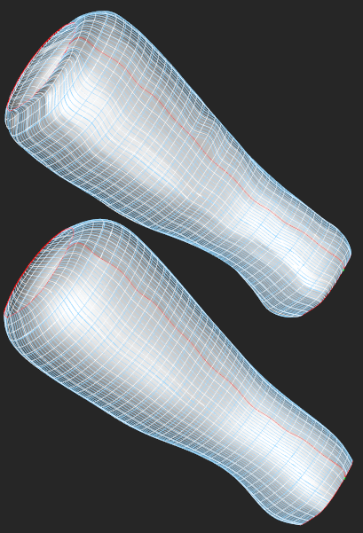

Surface smoothing
Surface smoothing (fairing) is available for B-spline surfaces. This modeling operator
is implemented following the paper by [Kallay, 1993].
The purpose of this operator is to move the control points of a B-surface
attempting to minimize its approximate bending energy. The boundary control points are
usually constrained to be in a fixed position so that any deformation of
a surface does not violate its boundaries (hence the faired surface is not a trivial plane for any
values of the fairing coefficient). The following picture illustrates the unfaired (top) and
faired (bottom) surface for a certain value of fairing coefficient.
